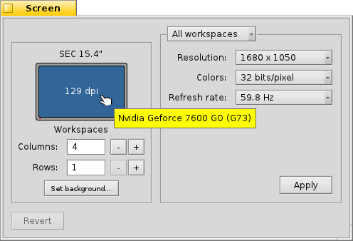

Français
Français Deutsch
Deutsch Italiano
Italiano Русский
Русский Español
Español Svenska
Svenska 日本語
日本語 Українська
Українська 中文 ［中文］
中文 ［中文］ Português
Português Suomi
Suomi Slovenčina
Slovenčina English
English Screen
Screen
| Deskbar : | ||
| Localisation : | /boot/system/preferences/Screen | |
| Réglages : | ~/config/settings/system/app_server/workspaces ~/config/settings/kernel/drivers/vesa - Seulement quand vous êtes en mode VESA. ~/config/settings/Screen_data - Conserve la position de la fenêtre du panneau de configuration. |
Chaque espace de travail peut avoir sa propre résolution, profondeur de couleur ou vitesse de rafraîchissement.
La liste déroulante en haut, indique si vos modifications sont appliquées uniquement au bureau virtuel actuel ou à tous. Les deux autres listes déroulantes contiennent les résolutions et les profondeurs de couleurs disponibles selon votre carte graphique.
Après avoir cliqué sur , le mode graphique est changé et un message d'alerte s'affiche, vous demandant de maintenir ou d'annuler les modifications. Si vous n'avez pas répondu à cette alerte, le mode graphique revient après 12 secondes au réglage précédent. Vous pouvez ne pas voir l'alerte si votre moniteur ne supporte pas le réglage.
À gauche, vous voyez une représentation de votre écran avec le nom du fabriquant et du modèle trouvé ainsi que la résolution en points par pouces (dpi). En passant dessus, la souris fait apparaitre une bulle avec le nom de la carte graphique si un pilote est présent. Dans le cas contraire, elle affiche VESA", une solution de repli compatible avec presque tous les adaptateurs graphiques.
restaure les paramètres qui étaient actifs lorsque vous avez démarré le panneau de préférences de l'écran.
En bas à gauche, vous pouvez régler le nombre de bureaux virtuels et les réarranger en ligne ou en colonnes, ou bien ouvrir les préférences du Fond d'écran.